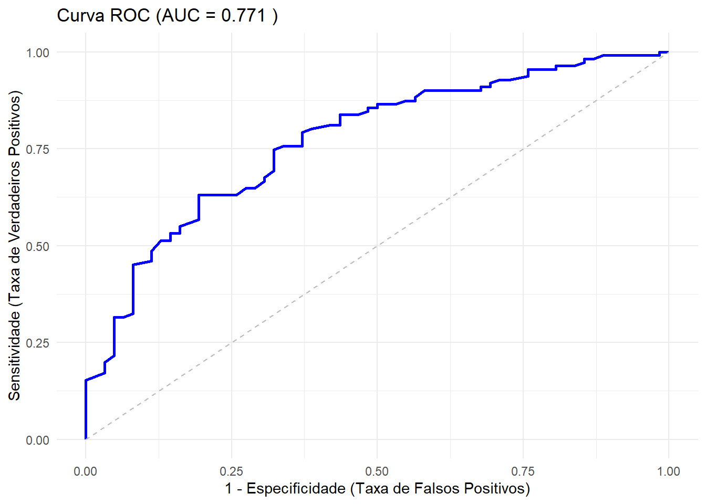

library(readxl)
library(ggplot2)
horseshoe<- read_excel("Dados/horseshoe.xlsx")18 Regressão logística: seleção de modelos, predição e qualidade do ajuste
Na aula de hoje, finalizamos o assunto de regressão logística apresentando tópicos que são importantes do ponto de vista aplicado: seleção de modelos, avaliação do poder preditivo do modelo escolhido e verificação de sua adequacidade.
Essa aula é baseada principalmente no Capítulo 5 - Logistic regression do livro An introduction to categorical data analysis (Agresti, 2007).
18.1 Estratégias na seleção de modelos
Assim como em regressão linear, na aplicação da regressão logística, é comum encontrarmos o desafio de selecionar as variáveis ou os termos que farão parte do modelo. De forma geral, esse é um problema de seleção de modelos que se torna mais complexo a medida que o número de variáveis regressoras aumenta. Nesses casos, segundo Agresti (2007), há dois objetivos que precisam ser contrabalanceados: o modelo deve ser complexo o suficiente para um bom ajuste aos dados, mas modelos simples são mais fáceis de serem interpretados.
Um ponto importante a se observar é em relação ao desbalanceamento em \(Y\), que ocorre quando a frequência de \(y=1\) ou \(y=0\) é relativamente baixa. Isso deve ser observado, pois limita o número de preditores para os quais os efeitos podem ser estimados precisamente. Um guia prático sugere que idealmente deve-se ter pelo menos 10 respostas de cada tipo para todo preditor no modelo. Por exemplo, se \(y=1\) em apenas 30 observações em um total de \(n = 1000\), o modelo não deveria ter mais de 3 preditores, apesar da amostra total ser grande (Agresti, 2007 - Seção 5.1.1).
Esse guia é uma recomendação aproximada. Mesmo que ela não seja atendida, os softwares ainda podem ajustar o modelo e reportar as estimativas. No entanto, as estimativas de verossmilhança podem ser viesadas e as estimativas dos erros padrões podem ser ruins. Também, de forma geral, a medida que o número de preditores aumenta, torna-se mais provável que algumas estimativas de máxima verossimilhança do modelo sejam infinitas.
Alguns pontos de atenção que vimos em modelos de regressão linear também são válidos para a regressão logística. Por exemplo, modelos com muitos preditores podem apresentar problema de multicolinearidade. Nesses casos, deletar um preditor redundante pode ajudar a reduzir os erros padrões de outros efeitos estimados.
Quando se trata da inclusão de termos de interação, Agresti (2007) defende o princípio da hierarquia dos modelos, ou seja, não é recomendado usar um modelo com interação mas sem os efeitos principais que formam essa interação. Isso porque, caso os termos de menor ordem não sejam incluídos, a significância estatística e a interpretação prática dos termos de ordem maior dependem de como as variáveis são codificadas. Isso não é desejado. Queremos que o mesmo resultado ocorra independente de como as variáveis foram codificadas.
18.1.1 Métodos de seleção de variáveis
Assim como em regressão linear, os métodos forward, backward e stepwise podem ser usados para selecionar ou remover preditores em uma regressão logística.
Recaptulando, a seleção forward adiciona termos ao modelo de forma sequencial até que nenhuma adição melhore o ajuste. Já a seleção por backward começa com um modelo complexo e, sequencialmente, remove termos. Em um dado passo, o procedimento elimina o termo no modelo com o maior valor-p no teste que verifica se os parâmentros são iguais a zero. Note que é recomendado testar apenas os termos de maior ordem para cada variável. Também, como já discutido, é inapropriado remover um efeito princial se o modelo contem interações envolvendo esse termo. No final, o processo para quando qualquer remoção de termo leva a uma piora significativa no ajuste.
O método stepwise é conhecido por ser uma mistura dos dois métodos descritos anteriormente. O procedimento é comumente aplicado com o critério de informação de Akaike (AIC), que julga um modelo pela proximidade com que seus valores ajustados tendem a estar dos valores esperados.
Independente do método de seleção, para variáveis explicativas qualitativas com mais de duas categorias, o processo deve considerar a variável por completo em qualquer etapa em vez de considerar apenas as variáveis indicadoras. Se for o caso, adicione ou remova toda a variável, não apenas uma de suas indicadoras.
Agresti (2007) enfatiza: os métodos de seleção de variáveis devem ser usados com cautela! Não necessariamente eles irão produzir um modelo que faz sentido. Quando você avalia muitos termos, alguns que não são verdadeiramente importantes podem parecer “impressionantes” meramente devido ao acaso.
A significância estatística não deve ser o único critério para incluir um termo no modelo. Pode ser aceitável incluir uma variável que é importante do ponto de vista prático e reportar a estimativa do seu efeito mesmo que ele não seja estatisticamente significativo. A sua presença no modelo pode ajudar a reduzir o viés na estimação de outros efeitos, por exemplo.
18.1.2 Aplicação usando o R
O conjunto de dados de caranguejo-ferradura possui quatro potenciais preditores:
C: cor (quatro categorias)
S: condição da espinha (3 categorias)
We: peso e
W: largura da carapaça
Considere um modelo com todos os efeitos principais, assuma variáveis indicadoras para as três primeiras categorias de cor e para as duas primeiras categorias de condição da espinha. O logit é dado por:
\[ \textrm{logit} (\pi_i) =\beta_0 + \beta_1\textrm{we} + \beta_2\textrm{w} + \beta_3c_{1} + \beta_4 c_{2} + \beta_5 c_{3} + \beta_6 s_{1} + \beta_7 s_{2} \] Inicialmente, vamos ajustar o modelo completo e avaliar se existe multicolinearidade por meio do VIF (Variance Inflation Factor).
library(car)Warning: package 'car' was built under R version 4.3.3Loading required package: carDataWarning: package 'carData' was built under R version 4.3.3# Transformar variáveis qualitativas em fatores
horseshoe$color <- factor(horseshoe$color,
levels = c(2, 3, 4, 5),
labels = c("Clara", "Média", "Escura", "Mais escura"))
horseshoe$color <- relevel(horseshoe$color, ref = "Mais escura")
horseshoe$spine <- factor(horseshoe$spine, levels=c(1,2,3), labels = c("Bons","Umbom","NenhumBom"))
horseshoe$spine <- relevel(horseshoe$spine, ref = "NenhumBom")
# Ajuste do modelo
modelo_full <- glm(y ~ weight + width + color + spine,
family = binomial,
data = horseshoe)
# Calcular o VIF
vif(modelo_full)Na sequência, vamos exemplificar o processo de seleção backward de forma manual. Cada comparação será analisada com base no teste da razão de verossimilhança, (por meio da Deviance) e no AIC. Para isso, consideramos algumas das configurações de modelos encaixados apresentadas em Agresti (2007). De forma geral, testamos a hipótese nula de o modelo mais simples é adequado contra a hipótese alternativa de que o ajuste do modelo mais complexo é melhor.
Para melhor compreensão, organize os resultados das próximas análises na tabela a seguir.
| Modelo | Preditores | Deviance | gl | AIC | Modelos comparados | Diferença na deviance |
|---|---|---|---|---|---|---|
| 1 | C\(*\)S + C\(*\)W + S\(*\)W | - | ||||
| 2 | C + S + W | (2)-(1) | ||||
| 3 | C + S | (3)-(2) | ||||
| 4 | S + W | (4)-(2) | ||||
| 5 | C + W | (5)-(2) |
#Modelos
mod_1 <- glm(y ~ (color + spine + width)^2,
family = binomial, data = horseshoe)
mod_2 <- glm(y ~ color + spine + width,
family = binomial, data = horseshoe)
mod_3 <- glm(y ~ color + spine, family = binomial, data = horseshoe) # C + S
mod_4 <- glm(y ~ spine + width, family = binomial, data = horseshoe) # S + W
mod_5 <- glm(y ~ color + width, family = binomial, data = horseshoe) # C + W# Exemplo: Modelo 1 versus Modelo 2
anova(mod_2, mod_1, test = "Chisq")Finalmente, vamos utilizar a função step() que realiza a seleção automática com base no AIC. Será adotado o método backward, especificado no argumento direction.
modelo_final <- step(modelo_full, direction = "backward", trace = 1)
summary(modelo_final)Uma estratégia que pode ser útil em várias aplicações é o agrupamento de categorias de um preditor qualitativo com o intuito de simplificar o modelo. Temos notado que há uma diferença relevante entre caranguejos “mais escuros” e de outras cores. Agresti (2007) mostra que um modelo mais simples e com um bom ajuste é um que contém as preditoras largura e cor, sendo essa última agrupada em duas categorias: 0 = caranguejos mais escuros e 1 = outras cores.
18.2 Poder preditivo
18.2.1 Tabelas de classificação
Uma tabela de classificação ou matriz de confusão pode ser utilizada para resumir o poder preditivo de uma regressão logística. Ela classifica de forma cruzada o resultado observado \(y\) com o valor predito (\(\hat{y}=0\) ou \(1\)). A predição é \(\hat{y}=1\) quando \(\hat{\pi_{i}} > \hat{\pi_{0}}\) e \(\hat{y}=0\) quando \(\hat{\pi_{i}} \leq \hat{\pi_{0}}\), para algum ponto de corte \(\pi_{0}\). Uma possibilidade é fazer \(\pi_{0} = 0,50\). Outra é fazer com que \(\pi_{0}\) seja a proporção de respostas 1 observada na amostra.
| Predito: 0 (\(\hat{y}=0\)) | Predito: 1 (\(\hat{y}=1\)) | |
|---|---|---|
| Observado: 0 (\(y=0\)) | VN (Verdadeiro Negativo) | FP (Falso Positivo) |
| Observado: 1 (\(y=1\)) | FN (Falso Negativo) | VP (Verdadeiro Positivo) |
Assumindo o modelo que contém largura e cor como preditores, obtemos as tabelas de classificação cruzada a seguir. Para isso, consideramos \(\pi_{0} = 0,50\) e \(\pi_{0} = 0,642\).
\(\pi_{0} = 0,50:\)
modelo_final <- glm(y ~ width + color, family = binomial, data = horseshoe)
# Probabilidades preditas (phat)
probs_preditas <- predict(modelo_final, type = "response")
# Para pi_0 = 0,50
corte_50 <- 0.50
# Se prob > 0.50, y_hat= 1 , caso contrário 0
classificacao_50 <- ifelse(probs_preditas > corte_50, 1, 0)
# Tabela (pi_0 = 0,50)
tab_50 <- table(Observado = horseshoe$y, Predito = classificacao_50)
print("Tabela de Classificação (Corte = 0,50)")[1] "Tabela de Classificação (Corte = 0,50)"print(tab_50) Predito
Observado 0 1
0 31 31
1 15 96\(\pi_{0} = 0,642:\)
corte_media <- mean(horseshoe$y)
classificacao_64 <- ifelse(probs_preditas > corte_media, 1, 0)
tab_64 <- table(Observado = horseshoe$y, Predito = classificacao_64)
print(paste("Tabela de Classificação (Corte =", round(corte_media, 3), "):"))[1] "Tabela de Classificação (Corte = 0.642 ):"print(tab_64) Predito
Observado 0 1
0 43 19
1 36 75Algumas medidas úteis na avaliação do poder preditivo são apresentadas abaixo.
- Sensitividade:
\[ P(\hat{y}=1|y=1) \]
- Especificidade:
\[ P(\hat{y}=0|y=0) \]
- Proporção total de classificações corretas:
\[ \begin{aligned} P(\textrm{classificação correta}) &= P(y=1 \quad\textrm{e}\quad \hat{y}=1) + P(y=0 \quad\textrm{e}\quad \hat{y}=0) \\ &= P(\hat{y}=1|y=1)P(y=1) + P(\hat{y}=0|y=0)P(y=0) \end{aligned} \]
Calcule a sensitividade, especificidade e proporção total de classificações corretas considerando a tabela com \(\pi_{0} = 0,642\).
A acurácia de testes diagnósticos é usualmente avaliada por meio da sensitividade e da especificidade. Dado que o paciente tem a doença, a probabilidade do teste diagnóstico ser positivo é chamada sensitividade. Dados que o paciente não tem a doença, a probabilidade do teste ser negativo é chamada especificidade. Quanto maiores os valores de sensitividade e especificidade, melhor é o teste diagnóstico (Agresti, 2007 - Seção 2.1.3).
As limitações de uma tabela de classificação cruzada são:
- Ela categoriza valores preditivos contínuos (\(\hat{\pi}\)) em binários.
- A escolha de \(\pi_{0}\) é arbitrária.
- Os resultados são sensíveis ao número de ocorrências de \(y=1\) e \(y=0\).
18.2.2 Curva ROC e AUC
O problema da escolha arbitrária de \(\pi_{0}\) pode ser contornado pela análise da curva ROC. Uma curva ROC (Receiver operating characteristic) é um gráfico que relaciona sensitividade como uma função de (1 - especificidade) para possíveis pontos de corte \(\pi_{0}\). Por essa razão, ela é mais informativa que uma tabela de classificação. Segundo Agresti (2007), quando \(\pi_{0}\) está próximo de 0, quase todas as predições são \(\hat{y} = 1\); então, a sensitividade é próxima de 1, a especificidade é próxima de 0, e o ponto para (1 - especificidade, sensitividade) tem coordenadas próximas a (1,1). Quando \(\pi_{0}\) está próximo de 1, quase todas as predições são \(\hat{y} = 0\); então, a sensitividade é próxima de 0, a especificidade é próxima de 1, e o ponto para (1 - especificidade, sensitividade) tem coordenadas próximas a (0,0).
A curva ROC usualmente tem um formato côncavo, conectando os pontos (0,0) e (1,1).
library(pROC)Warning: package 'pROC' was built under R version 4.3.3Type 'citation("pROC")' for a citation.
Attaching package: 'pROC'The following objects are masked from 'package:stats':
cov, smooth, var#Obter as probabilidades preditas no modelo escolhido
probs_modelo <- predict(modelo_final, type = "response")
# A função roc calcula sensibilidade e especificidade para todos os cortes
roc_obj <- roc(response = horseshoe$y, predictor = probs_modelo)Setting levels: control = 0, case = 1Setting direction: controls < cases# Calcular a AUC (Área Sob a Curva)
auc_valor <- auc(roc_obj)
# Gráfico da curva ROC
# legacy.axes = TRUE para que o eixo X seja (1 - Especificidade)
ggroc(roc_obj, legacy.axes = TRUE, colour = "blue", size = 1) +
geom_segment(aes(x = 0, xend = 1, y = 0, yend = 1),
linetype = "dashed", color = "grey") +
labs(title = paste("Curva ROC (AUC =", round(auc_valor, 3), ")"),
x = "1 - Especificidade (Taxa de Falsos Positivos)",
y = "Sensitividade (Taxa de Verdadeiros Positivos)") +
theme_minimal()Warning in geom_segment(aes(x = 0, xend = 1, y = 0, yend = 1), linetype = "dashed", : All aesthetics have length 1, but the data has 109 rows.
ℹ Please consider using `annotate()` or provide this layer with data containing
a single row.
A área sob a curva ROC, denotada por AUC (Area Under the Curve), resume a informação da curva em um único valor numérico, servindo como índice de performance global do modelo.
A AUC varia de 0,5 a 1,0, de forma que:
AUC = 0,5: O modelo não é melhor que o acaso (linha diagonal tracejada). As predições são aleatórias.
0,7 \(\leq\) AUC < 0,8: Discriminação aceitável.
0,8 \(\leq\) AUC < 0,9: Discriminação excelente.
AUC = 1,0: Discriminação perfeita (separa perfeitamente os casos \(y=1\) dos \(y=0\)).
No exemplo acima, a AUC observada é de aproximadamente 0,77, indicando que o modelo baseado na largura e cor tem um poder preditivo razoável a bom.
18.3 Qualidade do ajuste
Há diferentes maneiras de checar o ajuste de um modelo de regressão. Segundo Agresti (2007), uma maneira é por meio do Teste de Razão de Verossimilhanças para comparação de modelos. Como já vimos, podemos considerar a inclusão de termos de maior grau (quadrático) ou múltiplos preditores. Se modelos mais complexos não se ajustarem melhor (teste não significativo), de certa forma isso fornece um indicativo de que o modelo escolhido é mais adequado.
Um procedimento mais geral para verificar a qualidade de ajuste (goodness-of-fit) do teste compara o modelo ajustado com os dados observados. Por essa abordagem, os dados propriamente ditos são considerados representantes do ajuste do modelo mais complexo o possível: o modelo saturado, que tem um parâmetro para cada observação.
Em uma análise da adequacidade, testa-se se todos os parâmetros que estão no modelo saturado, mas não estão no modelo em estudo são iguais a zero. A estatística da razão de verossimilhança para esse teste (\(G^{2}\)) é a deviance do modelo. Para grandes amostras, essa estatística de teste tem distribuição qui-quadrado sob a hipótese nula (a estatística correspodente é \(\chi^{2}\)).
Nesse caso, a interpretação é a seguinte:
Hipótese Nula (\(H_0\)): O modelo ajustado é bom (não há diferença significativa entre o que o modelo previu e o que observamos).
Hipótese Alternativa (\(H_a\)): Evidências de falta de ajuste do modelo (o modelo não captura bem o padrão dos dados).
Grandes valores de \(G^{2}\) ou de \(\chi^{2}\) fornecem evidência de falta de ajuste.
Um ponto importante é que a validade desses testes depende de como os dados estão estruturados.
Dados Agrupados: Quando temos muitas observações para cada perfil (ex: Dados de Ronco ou uma preditora discreta), usamos os testes clássicos de Deviance e Pearson. Se o valor-p for baixo, temos indicativo de falta de ajuste.
Dados Não Agrupados ou com Preditores Contínuos: No nosso exemplo dos caranguejos, temos a variável width (largura), que é contínua. Isso faz com que cada caranguejo seja praticamente único (muitos grupos com apenas 1 observação). Neste cenário, as estatísticas de Deviance e Pearson não fazem sentido e, portanto, não devem ser usadas.
Uma alternativa que pode ser aplicada para dados não agrupados é o teste de Hosmer-Lemeshow, que usa a estatística de Pearson para comparar contagens observadas e ajustadas em um agrupamento “artificial” das observações.
Na sequência, veremos uma aplicação desse teste aos dados de caranguejos.
library(ResourceSelection)Warning: package 'ResourceSelection' was built under R version 4.3.3ResourceSelection 0.3-6 2023-06-27# g = 10 para dividir em 10 grupos (decis)
hl_teste <- hoslem.test(modelo_final$y, fitted(modelo_final), g = 10)
print(hl_teste)
Hosmer and Lemeshow goodness of fit (GOF) test
data: modelo_final$y, fitted(modelo_final)
X-squared = 4.4581, df = 8, p-value = 0.8136